TP 3 - Vendredi 13 Février 2026
Fait sur une VM Fedora
Pierre BDL
Création du fichier file_bin
# Créer le fichier de 50 * 1ko soit 50ko
dd if=/dev/urandom of=file_bin bs=1k count=50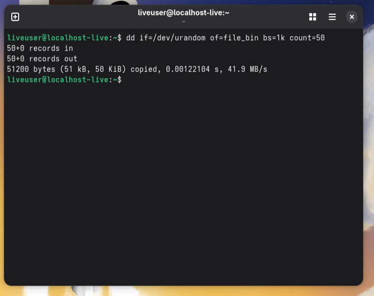
Encodage en base64
# Encoder le fichier en base 64
openssl base64 -e -in file_bin -out file_bin_b64
# Lire le fichier
cat file_bin_b64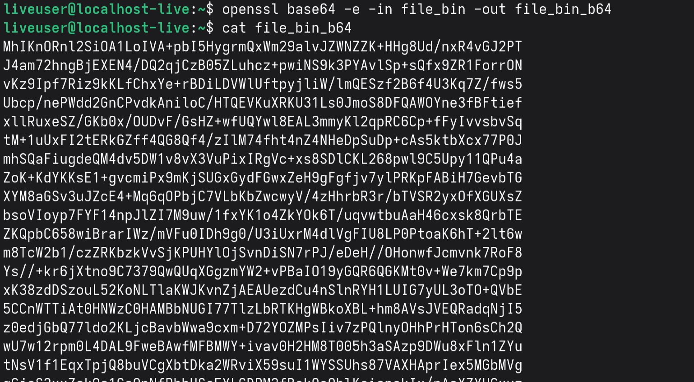
# Comparer les tailles des fichiers commençant par file_bin
ls -l file_bin*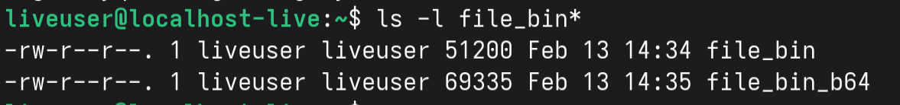
On peut voir que le fichier encodé est plus lourd que le fichier de base d'environ 1/3.
# Décoder le fichier
openssl base64 -d -in file_bin_b64 -out file_bin2
# Comparaison de la taille (-s pour afficher un message quand c'est identique)
diff -s file_bin file_bin2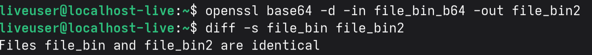
On peut voir que les fichiers file_bin et file_bin2 sont identiques.
# Création du fichier message avec les mots contenant "ker"
cat /usr/share/dict/words | grep ker | tr "\n" " " >message
# grep ker : filtre les lignes contenant "ker"
# tr "\n" " " : remplace les sauts de ligne par des espaces
# message : redirige le résultat vers un fichier nommé "message"
# Afficher le contenu du fichier
cat message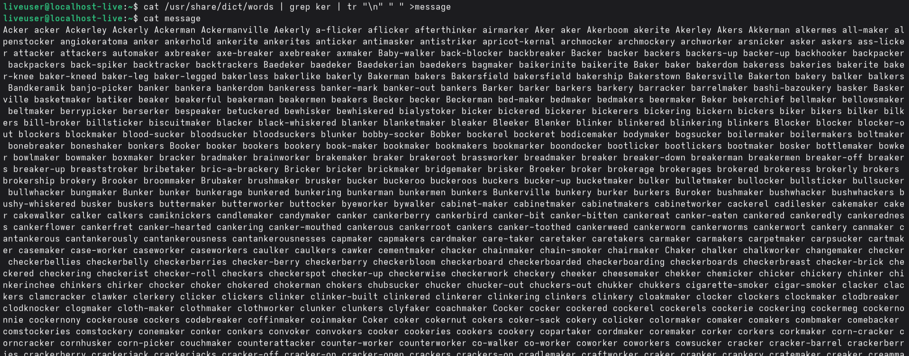
# Encoder le fichier message
openssl enc -e -salt -in message -out message_c -aes256 -pbkdf2 -md sha256
# enc : sous-commande pour le chiffrement/déchiffrement
# -e : indique une opération de chiffrement
# -salt : ajoute un sel aléatoire pour renforcer la sécurité
# -in message : fichier d'entrée non chiffré
# -out message_c : fichier de sortie chiffré
# -aes256 : algorithme de chiffrement AES avec une clé de 256 bits
# -pbkdf2 : utilise l'algorithme PBKDF2 pour dériver la clé
# -md sha256 : utilise SHA-256 comme fonction de hachageDécodage du fichier
# Décoder le fichier
openssl enc -d -in message_c -aes256 -pbkdf2 -md sha256
# Affichage du contenu du fichier
cat message_cEncodage en base64
# Encoder le fichier
openssl enc -e -a -salt -in message -out message_c2 -aes256 -pbkdf2 -md sha256
# Affichage du contenu du fichier
cat message_c2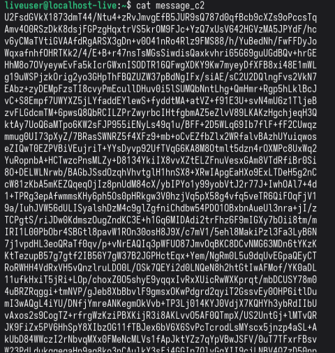
Génération d'une paire de clés RSA
# Génération d'une paire de clés RSA
openssl genrsa -out cle_ynov.pem 2048
# genrsa : génère une paire de clés RSA
# -out cle_ynov.pem : fichier de sortie pour la paire de clés
# 2048 : taille de la clé en bits
# Affichage du contenu du fichier
cat cle_ynov.pem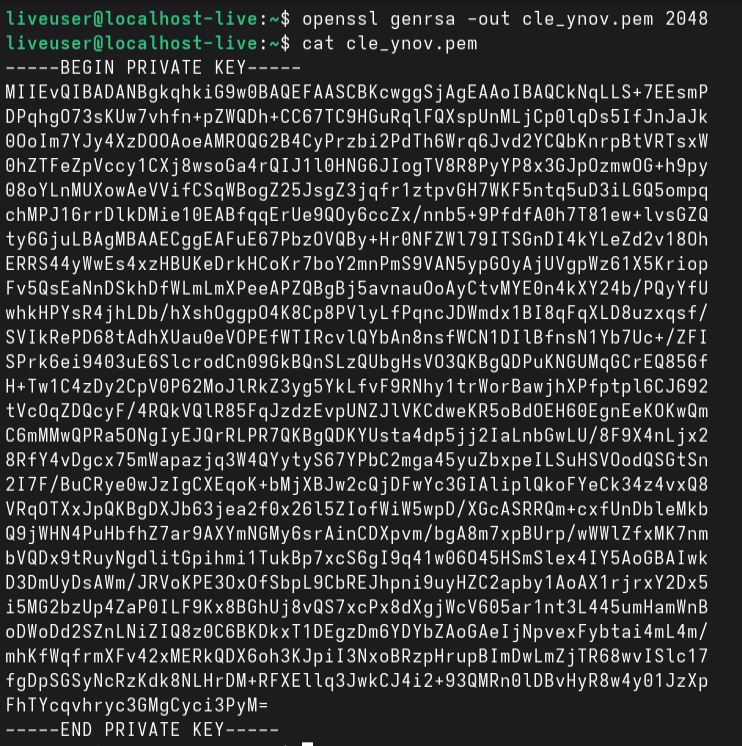
openssl rsa -in cle_ynov.pem -text -noout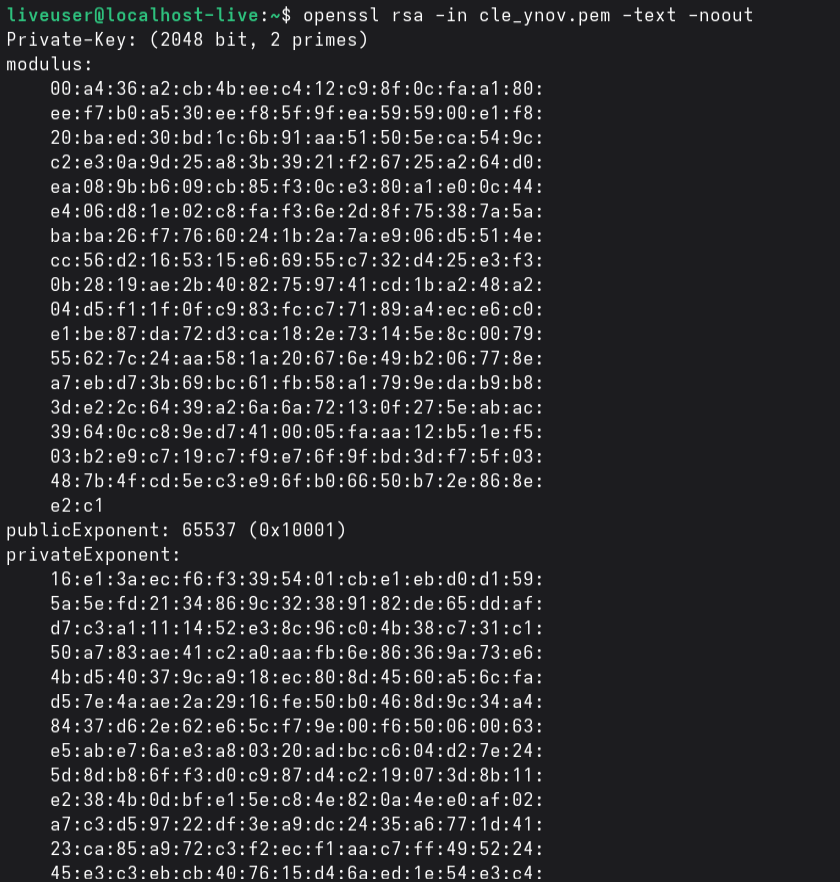
# Encoder le fichier de la clé privée
openssl rsa -in cle_ynov.pem -aes256 -out cle_ynov.pem
# Exporter la clé publique
openssl rsa -in cle_ynov.pem -pubout -out clepublique_ynov.pem
# Afficher la clé
cat clepublique_ynov.pem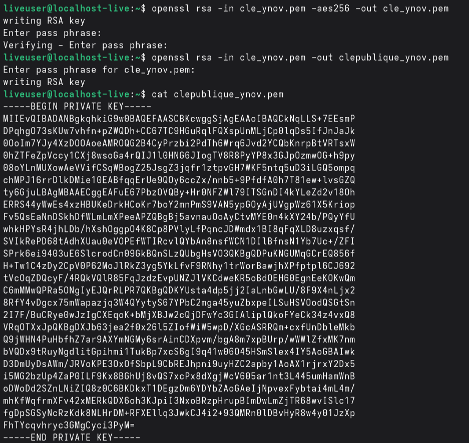
# Visualiser les paramètres
openssl rsa -in clepublique_ynov.pem -pubin -text -noout
# -pubin : indique que le fichier contient une clé publique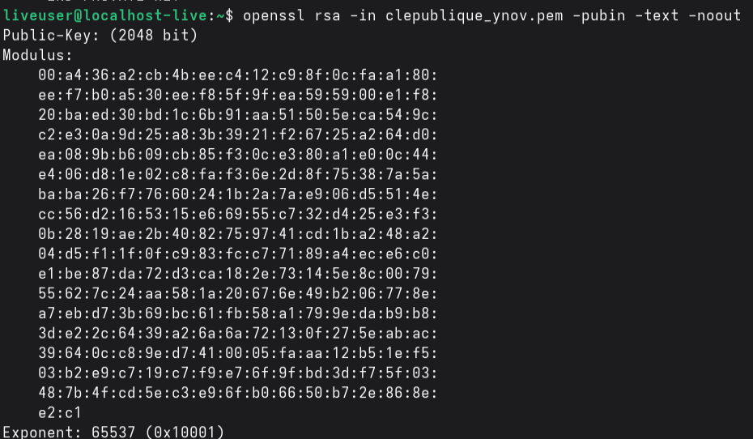
# On crée un fichier qui va être encodé
sudo nano pass_ynov
# On l'encrypte avec la clé qu'on a créée
openssl pkeyutl -encrypt -in pass_ynov -inkey clepublique_ynov.pem -pubin -out pass_ynov_c
# pkeyutl : utilitaire pour les opérations cryptographiques
# -encrypt : chiffre le contenu du fichier d'entrée
# -in pass_ynov : fichier contenant la donnée à chiffrer
# -inkey clepublique_ynov.pem : clé publique utilisée
# -pubin : indique que la clé d'entrée est une clé publique
# -out pass_ynov_c : fichier de sortie pour les données chiffrées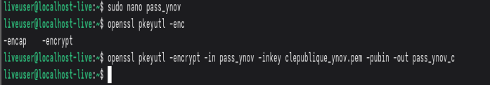
# On décode le fichier
openssl pkeyutl -decrypt -in pass_ynov_c -inkey cle_ynov.pem
# -decrypt : déchiffre les données
# -inkey cle_ynov.pem : utilise la clé privée# Créer le fichier de 100ko
dd if=/dev/urandom of=data.bin bs=50k count=2
# Afficher la taille des fichiers
ls -l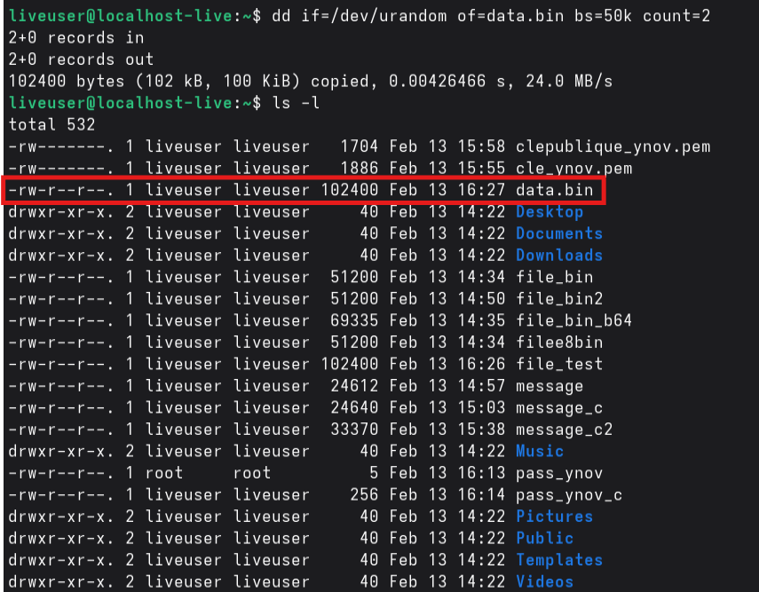
# Encoder le fichier en base 64
openssl base64 -e -in data.bin -out data.b64
# Lire le fichier
cat data.b64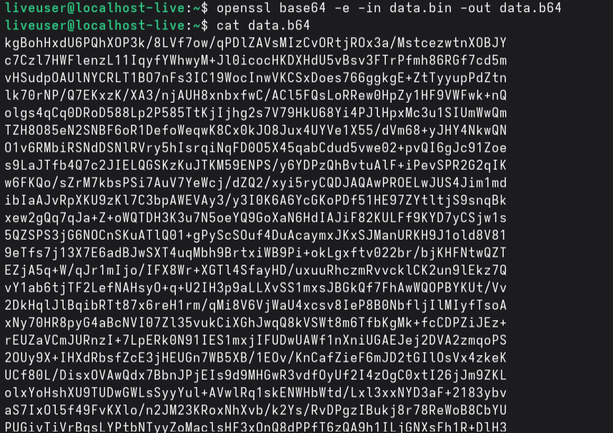
# Regarder la taille
ls -l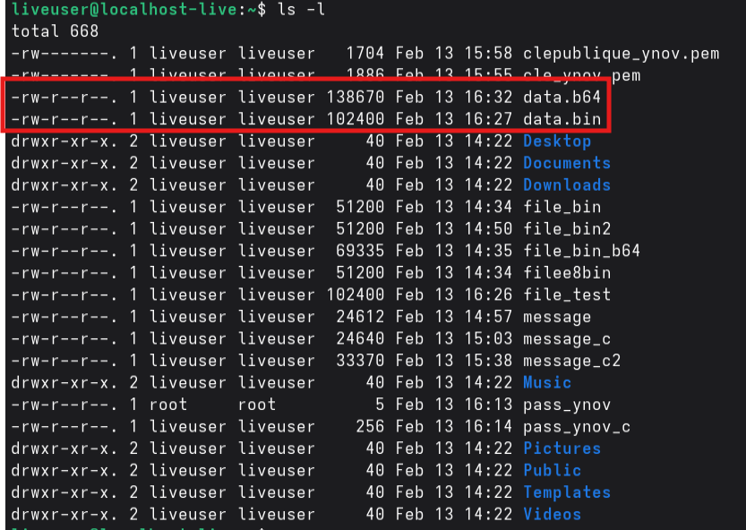
On peut voir que le fichier encodé fait environ 1/3 de poids en plus que le fichier source
# Décoder le fichier
openssl base64 -d -in data.b64 -out data_restored.bin
# Comparaison
diff -s data.bin data_restored.bin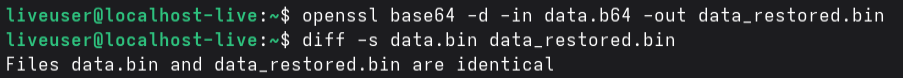
1. Base64 est-il un chiffrement ? Pourquoi ?
Base64 encode les fichiers et ne les chiffre pas. On a pu voir qu'il fallait une clé pour chiffrer et déchiffrer un fichier; or, base64 n'en avait pas donc c'est de l'encodage. Base64 permet de transformer le contenu du fichier en caractères ASCII.
2. Pourquoi la taille du fichier change-t-elle après encodage ?
Lorsqu'on encode 3 octets de données, on le fait sur 4 octets. Avec cette augmentation, on obtient +1/3 de taille de fichier.
3. Quel est approximativement le pourcentage d'augmentation ?
Le pourcentage d'augmentation de la taille est d'environ 33% (1/3).
4. Quelle méthode permet de vérifier rigoureusement que deux fichiers sont identiques ?
On utilise la commande diff -s fichier1 fichier2
# Créer un fichier confidentiel.txt
sudo nano confidentiel.txt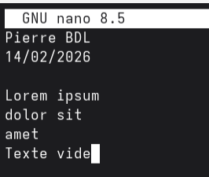
# Encoder le fichier
openssl enc -e -salt -in confidentiel.txt -out confidentiel.enc -aes256 -pbkdf2 -md sha256
# Affichage du contenu
cat confidentiel.enc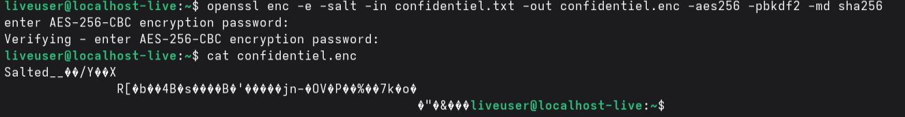
# Décoder le fichier
openssl enc -d -salt -in confidentiel.enc -out confidentiel2.txt -aes256 -pbkdf2 -md sha256
# Affichage du contenu
cat confidentiel2.txt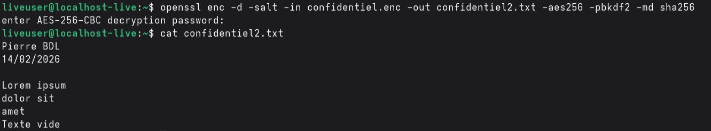
# Encodage du fichier
openssl enc -e -salt -in confidentiel.txt -out confidentiel2.enc -aes256 -pbkdf2 -md sha256
# Vérifier les différences
diff -s confidentiel.enc confidentiel2.enc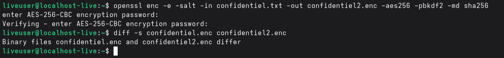
1. Pourquoi les deux fichiers chiffrés sont-ils différents ?
C'est pour éviter que quelqu'un puisse accéder au fichier s'il a la même clé. Cette méthode permet que chaque chiffrement soit unique et donc plus sécurisé.
2. Quel est le rôle du sel ?
Le sel permet de rendre chaque chiffrement unique et donc d'améliorer la sécurité. De plus, ça permet que le chiffrement diffère même avec le même mot de passe.
3. Que se passe-t-il si une option change lors du déchiffrement ?
Le déchiffrement ne pourra pas fonctionner car le chiffrement répond à un algorithme (via les options). Si on change ces options, l'algorithme différera et le déchiffrement est impossible. Donc le fichier restera illisible.
4. Pourquoi utilise-t-on PBKDF2 ?
PBKDF2 permet de mieux sécuriser le fichier en encodant le mot de passe. De plus, il va faire une dérivation de la clé qui va améliorer la sécurité.
5. Quelle est la différence entre encodage et chiffrement ?
L'encodage est une transformation des caractères qui n'a pas besoin de clé pour être décodé (il "suffit" d'avoir l'algorithme comme base64). L'encodage est donc un moyen peu sécurisé car facilement contournable si on connaît l'algorithme. Le chiffrement utilise une clé qui va transformer de manière unique chaque caractère. Le chiffrement nécessite une clé obligatoire pour faire l'opération inverse. Le chiffrement est donc une technique beaucoup plus sécurisée que l'encodage.
# Génération de la clé privée
openssl genrsa -out rsa_private.pem 2048
# Exporter la clé publique
openssl rsa -in rsa_private.pem -pubout -out rsa_public.pem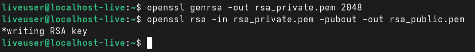
# Chiffrement de la clé privée
openssl rsa -in rsa_private.pem -aes256 -out rsa_private_p.pem
# Affichage des paramètres de la clé privée
openssl rsa -in rsa_private_p.pem -text -noout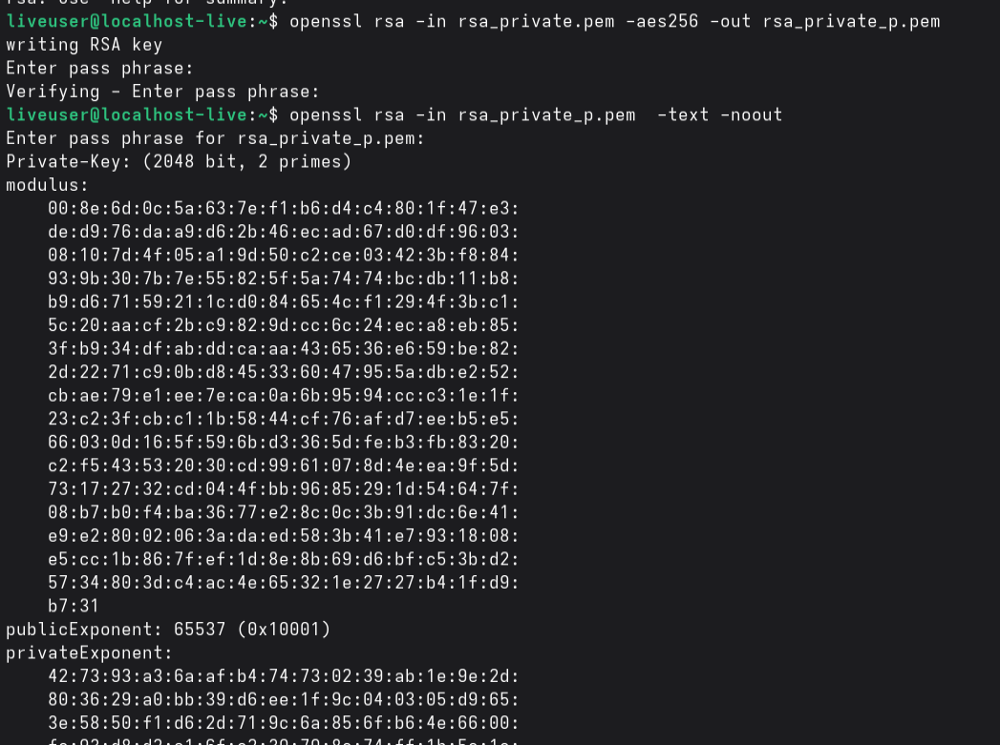
# Affichage des paramètres de la clé publique
openssl rsa -in rsa_public.pem -pubin -text -noout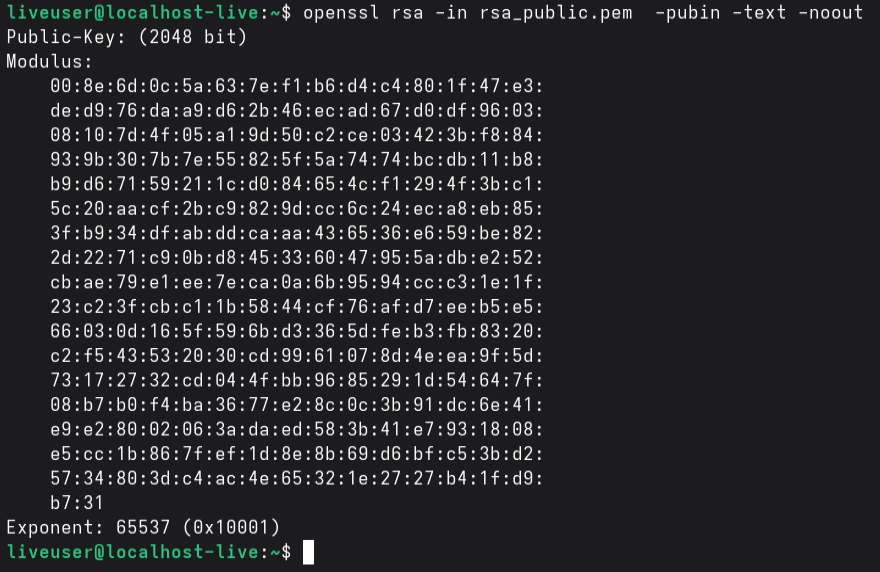
# Créer le fichier secret.txt
echo "Bonjour" > secret.txt
# Chiffrer avec la clé publique
openssl pkeyutl -encrypt -in secret.txt -inkey rsa_public.pem -pubin -out secret.enc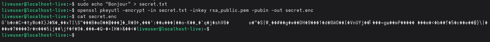
# On déchiffre le fichier
openssl pkeyutl -decrypt -in secret.enc -out secret2.txt -inkey rsa_private_p.pem
# On affiche le contenu du fichier déchiffré
cat secret2.txt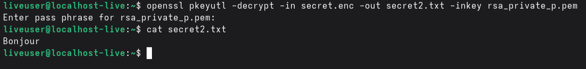
1. Pourquoi la clé privée ne doit-elle jamais être partagée ?
C'est cette dernière qui permet de déchiffrer les données. Donc si on la partage, tous ceux qui l'ont pourront déchiffrer les fichiers. Dans le monde réel, c'est comme partager son mot de passe d'ordinateur ou de téléphone, tout le monde peut accéder à nos données sensibles. De plus, la clé privée permet aussi de chiffrer les données, donc ça ouvre la porte à de l'usurpation d'identité.
2. Pourquoi RSA n'est-il pas adapté au chiffrement de gros fichiers ?
RSA demande beaucoup de calcul à l'ordinateur donc si on commence à chiffrer de gros fichiers, on peut réduire les performances de l'ordinateur. De plus, RSA a été conçu pour de petits chiffrements et n'est donc pas adapté à de gros fichiers. RSA a une limite de quelques centaines d'octets pour la taille des chiffrements.
3. Quelles différences observe-t-on entre les paramètres d'une clé publique et d'une clé privée ?
Comme dit plus haut, la clé privée a accès à tout ce qu'a la clé publique mais également à d'autres paramètres qui permettent à la clé privée de pouvoir déchiffrer les données.
4. Quel est le rôle du modulo dans RSA ?
Le modulo est la base du modèle RSA, c'est lui qui va vraiment créer la sécurité.
5. Pourquoi utilise-t-on souvent RSA pour chiffrer une clé AES plutôt qu'un document entier ?
Étant donné que RSA est conçu pour chiffrer de petits fichiers, il est plus facile et rapide de chiffrer une clé qui permettra, elle-même, de chiffrer de plus gros fichiers. Ça permet également d'augmenter la sécurité car la clé est aussi chiffrée.
# Créer le fichier contrat.txt
echo "Vous êtes engagé" > contrat.txt
# Génération du hash
openssl dgst -sha256 contrat.txt
# Signer avec la clé privée
openssl dgst -sha256 -sign rsa_private_p.pem -out contrat.sig contrat.txt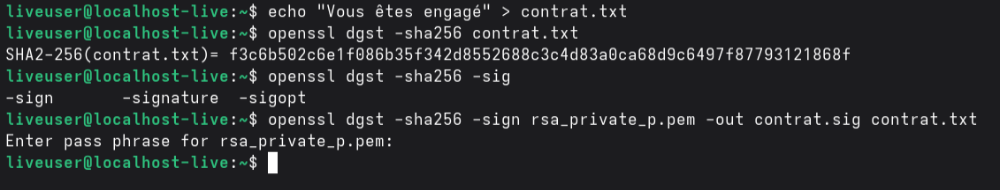
# Vérifier la signature avec la clé publique
openssl dgst -sha256 -verify rsa_public.pem -signature contrat.sig contrat.txt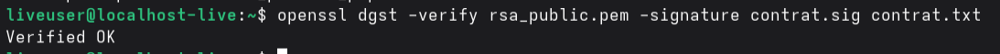
# Modification du fichier contrat.txt
echo "Félicitations" >> contrat.txt
# Vérifier à nouveau la signature
openssl dgst -sha256 -verify rsa_public.pem -signature contrat.sig contrat.txt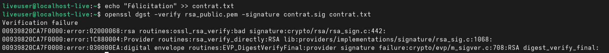
1. Que se passe-t-il après modification du fichier ?
La vérification de la signature échoue donc la signature est devenue invalide.
2. Pourquoi ?
Étant donné l'échec entre la première tentative et la deuxième, on peut en déduire que la signature est liée au contenu du fichier. Puisqu'on a modifié le fichier, la signature a aussi été modifiée.
3. Quel est le rôle du hachage dans le mécanisme de signature ?
Le hachage permet de créer une empreinte unique dépendante du contenu du fichier. Cette technique permet de rendre la signature unique car il faudrait copier le fichier au caractère près ainsi qu'avoir la même clé. Donc le hachage est une partie du procédé qui rend la signature unique. De plus le hachage en lui-même ne rend pas le fichier chiffré; c'est la clé privée qui va vraiment le sécuriser.
4. Quelle différence entre signature numérique et chiffrement ?
La signature est beaucoup utilisée par les grandes marques car elle permet d'assurer une authenticité du signataire. Elle assure aussi le fait que le fichier est complet car si le fichier est modifié, la signature change. On peut donc savoir si le fichier est complet avec une commande. Le chiffrement, lui, a deux clés qui permettent de "verrouiller" le fichier. Le chiffrement n'est, à la base, pas fait pour savoir si le fichier est complet, il se contente de le crypter.